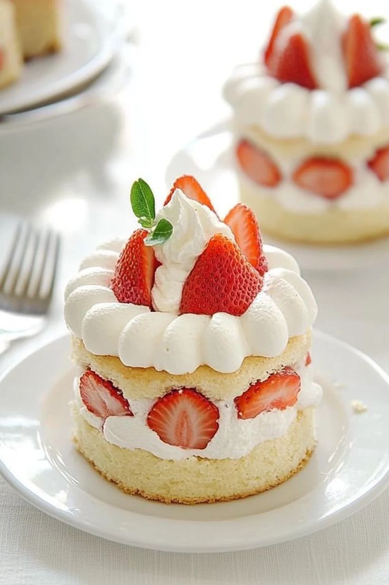

Strawberry Shortcake

Category: Dessert
Ingredients:
- 2 cups all-purpose flour
- 1/4 cup sugar
- 1 tbsp baking powder
- 1/2 tsp salt
- 1/2 cup cold butter, cubed
- 2/3 cup milk
- 1 tsp vanilla extract
- 2 cups fresh strawberries, sliced
- 2 tbsp sugar (for strawberries)
- 1 cup heavy whipping cream
- 2 tbsp powdered sugar (for cream)
- 1/2 tsp vanilla (for cream)
Instructions:
- Preheat oven to 220°C (425°F). Line a baking tray with parchment paper.
- In a bowl, mix flour, sugar, baking powder, and salt. Cut in butter until crumbly.
- Add milk and vanilla; mix until dough forms. Gently knead and pat into a 1-inch thick circle.
- Cut into rounds and place on baking tray. Bake for 12-15 minutes until golden. Let cool.
- Mix strawberries with 2 tbsp sugar. Let sit to release juices.
- Whip heavy cream with powdered sugar and vanilla until soft peaks form.
- Slice cooled biscuits in half. Layer with whipped cream and strawberries. Top with the other half.
- Serve immediately or chill slightly before serving.
← Back to Home